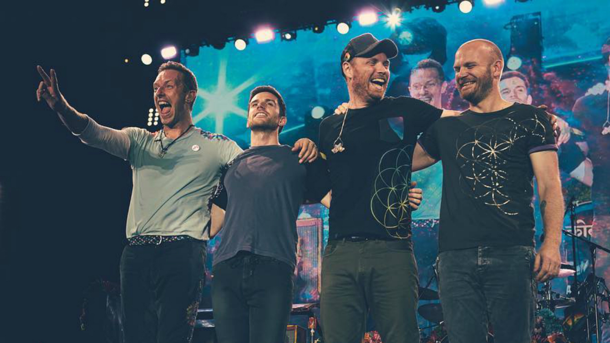

Coldplay are a British rock band formed in London in 1996. The four members – comprising lead vocalist/pianist Chris Martin, lead guitarist Jonny Buckland, bassist Guy Berryman and drummer Will Champion – were at University College London and came together from 1996 to 1998.
During these two years, the band changed names from Pectoralz, to Starfish, and finally, to Coldplay. Creative director and former manager Phil Harvey is often referred to as the fifth member by the band. They recorded and released two EPs: Safety in 1998 and The Blue Room in 1999. The latter was their first release on a major label, after signing to Parlophone.